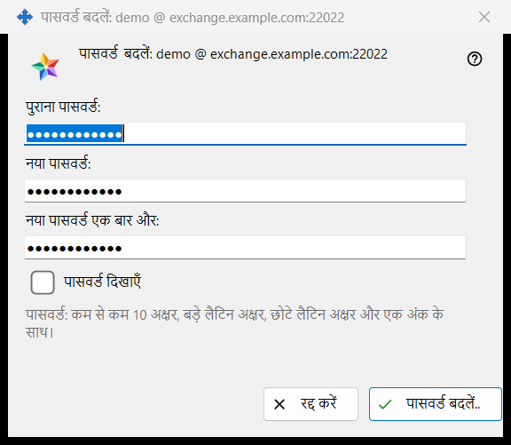
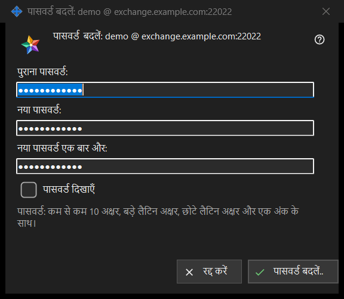

पासवर्ड बदलें
यह किस लिए है
उस एक्सचेंज खाते का पासवर्ड बदलता है जिसमें यह पीसी साइन इन है। यह Share Manager की सेटिंग के एक्सचेंज खाता समूह में पासवर्ड बदलें.. बटन से खुलता है; यह बटन तभी दिखता है जब खाता जुड़ा हो। शीर्षक में खाते का नाम लॉगिन @ सर्वर के रूप में आता है। विंडो खुद कुछ नहीं भेजती: वह आपके लिखे की जाँच करके उसे लौटा देती है, भेजने का काम इस पीसी का कनेक्शन करता है, और आख़िरी फ़ैसला सर्वर का है।


इस क्रम में
- Share Manager की सेटिंग में एक्सचेंज खाता समूह में पासवर्ड बदलें.. दबाएँ।
- पुराना पासवर्ड: फ़ील्ड में पुराना पासवर्ड लिखें।
- नया पासवर्ड: फ़ील्ड में नया पासवर्ड लिखें और उसे नया पासवर्ड एक बार और: फ़ील्ड में दोहराएँ।
- तीनों फ़ील्ड जाँचने के लिए पासवर्ड दिखाएँ पर निशान लगाएँ।
- पासवर्ड बदलें.. दबाएँ; अगर चेतावनी की पंक्ति दिखे, तो फ़ील्ड सुधारकर फिर दबाएँ।
- समूह में दिखाया गया जवाब पढ़ें।
तत्व
तीन फ़ील्ड
पुराना पासवर्ड, नया पासवर्ड और नए पासवर्ड की दोहराई। तीनों छिपे रहते हैं; पासवर्ड दिखाएँ का एक ही निशान तीनों को एक साथ दिखा देता है और याद नहीं रखा जाता। विंडो बंद होने पर फ़ील्ड खाली कर दिए जाते हैं।
पासवर्ड का नियम
फ़ील्ड के नीचे की पंक्ति कहती है: पासवर्ड: कम से कम 10 अक्षर, बड़े लैटिन अक्षर, छोटे लैटिन अक्षर और एक अंक के साथ। विंडो इसे तुरंत जाँचती है, इसलिए कुछ भी भेजे जाने से पहले आपको जवाब मिल जाता है।
चेतावनी की पंक्ति
बटन इस क्रम में जाँचता है: पुराना पासवर्ड दें। फिर: दोनों पासवर्ड एक नहीं हैं। फिर नियम: पासवर्ड 10 अक्षरों से छोटा है। या: पासवर्ड में बड़ा लैटिन अक्षर नहीं है। या: पासवर्ड में छोटा लैटिन अक्षर नहीं है। या: पासवर्ड में कोई अंक नहीं है। पहली मिली समस्या जाँच रोक देती है, विंडो खुली रहती है और कुछ नहीं भेजा जाता।
दबाने के बाद क्या होता है
सही प्रविष्टि पर विंडो बंद हो जाती है और समूह जवाब दिखाता है। सफलता पर: पासवर्ड बदल गया। यह कंप्यूटर काम करता रहेगा, और खाते के दूसरे डिवाइस को फिर से साइन-इन करना होगा। दूसरे जवाब: पुराना पासवर्ड सही नहीं था। / बहुत अधिक प्रयास। एक मिनट रुककर फिर कोशिश करें। / सर्वर ने पासवर्ड बदलने से मना किया। / सर्वर से कोई कनेक्शन नहीं है। जुड़ें और फिर कोशिश करें। अगर सर्वर कमज़ोर पासवर्ड को अस्वीकार करे, तो उसका अपना वाक्य दिखाया जाता है।
रद्द करें और कुंजियाँ
रद्द करें या Esc विंडो बंद कर देता है और कुछ नहीं बदलता; Enter पासवर्ड बदलें.. बटन दबाता है।
प्रबंधक सेटिंग · SFTP साझाकरण सेटिंग · एक्सचेंज सर्वर सेटिंग